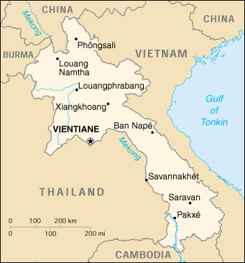

|
Laos | |
| Introduction Geography People Government Economy Communications Transportation Military Transnational Issues | ||
|  | ||
| Laos | Introduction | Top of Page |
| Background: | In 1975 the communist Pathet Lao took control of the government, ending a six-century-old monarchy. Initial closer ties to Vietnam and socialization were replaced with a gradual return to private enterprise, an easing of foreign investment laws, and the admission into ASEAN in 1997. |
| Laos | Geography | Top of Page |
| Location: | Southeastern Asia, northeast of Thailand, west of Vietnam |
| Geographic coordinates: | 18 00 N, 105 00 E |
| Map references: | Southeast Asia |
| Area: |
total:
236,800 sq km
land: 230,800 sq km water: 6,000 sq km |
| Area - comparative: | slightly larger than Utah |
| Land boundaries: |
total:
5,083 km
border countries: Burma 235 km, Cambodia 541 km, China 423 km, Thailand 1,754 km, Vietnam 2,130 km |
| Coastline: | 0 km (landlocked) |
| Maritime claims: | none (landlocked) |
| Climate: | tropical monsoon; rainy season (May to November); dry season (December to April) |
| Terrain: | mostly rugged mountains; some plains and plateaus |
| Elevation extremes: |
lowest point:
Mekong River 70 m
highest point: Phou Bia 2,817 m |
| Natural resources: | timber, hydropower, gypsum, tin, gold, gemstones |
| Land use: |
arable land:
3%
permanent crops: 0% permanent pastures: 3% forests and woodland: 54% other: 40% (1993 est.) |
| Irrigated land: |
1,250 sq km (1993 est.)
note: rainy season irrigation - 2,169 sq km; dry season irrigation - 750 sq km (1998 est.) |
| Natural hazards: | floods, droughts, and blight |
| Environment - current issues: | unexploded ordnance; deforestation; soil erosion; a majority of the population does not have access to potable water |
| Environment - international agreements: |
party to:
Biodiversity, Climate Change, Desertification, Environmental Modification, Law of the Sea, Nuclear Test Ban, Ozone Layer Protection
signed, but not ratified: none of the selected agreements |
| Geography - note: | landlocked |
| Laos | People | Top of Page |
| Population: | 5,635,967 (July 2001 est.) |
| Age structure: |
0-14 years:
42.75% (male 1,212,577; female 1,196,795)
15-64 years: 53.94% (male 1,494,927; female 1,544,851) 65 years and over: 3.31% (male 85,632; female 101,185) (2001 est.) |
| Population growth rate: | 2.48% (2001 est.) |
| Birth rate: | 37.84 births/1,000 population (2001 est.) |
| Death rate: | 13.02 deaths/1,000 population (2001 est.) |
| Net migration rate: | 0 migrant(s)/1,000 population (2001 est.) |
| Sex ratio: |
at birth:
1.03 male(s)/female
under 15 years: 1.01 male(s)/female 15-64 years: 0.97 male(s)/female 65 years and over: 0.85 male(s)/female total population: 0.98 male(s)/female (2001 est.) |
| Infant mortality rate: | 92.89 deaths/1,000 live births (2001 est.) |
| Life expectancy at birth: |
total population:
53.48 years
male: 51.58 years female: 55.44 years (2001 est.) |
| Total fertility rate: | 5.12 children born/woman (2001 est.) |
| HIV/AIDS - adult prevalence rate: | 0.05% (1999 est.) |
| HIV/AIDS - people living with HIV/AIDS: | 1,400 (1999 est.) |
| HIV/AIDS - deaths: | 130 (1999 est.) |
| Nationality: |
noun:
Lao(s) or Laotian(s)
adjective: Lao or Laotian |
| Ethnic groups: | Lao Loum (lowland) 68%, Lao Theung (upland) 22%, Lao Soung (highland) including the Hmong ("Meo") and the Yao (Mien) 9%, ethnic Vietnamese/Chinese 1% |
| Religions: | Buddhist 60%, animist and other 40% |
| Languages: | Lao (official), French, English, and various ethnic languages |
| Literacy: |
definition:
age 15 and over can read and write
total population: 57% male: 70% female: 44% (1999 est.) |
| Laos | Government | Top of Page |
| Country name: |
conventional long form:
Lao People's Democratic Republic
conventional short form: Laos local long form: Sathalanalat Paxathipatai Paxaxon Lao local short form: none |
| Government type: | Communist state |
| Capital: | Vientiane |
| Administrative divisions: | 16 provinces (khoueng, singular and plural), 1 municipality* (kampheng nakhon, singular and plural), and 1 special zone** (khetphiset, singular and plural); Attapu, Bokeo, Bolikhamxai, Champasak, Houaphan, Khammouan, Louangnamtha, Louangphabang, Oudomxai, Phongsali, Salavan, Savannakhet, Viangchan*, Viangchan, Xaignabouli, Xaisomboun**, Xekong, Xiangkhoang |
| Independence: | 19 July 1949 (from France) |
| National holiday: | Republic Day, 2 December (1975) |
| Constitution: | promulgated 14 August 1991 |
| Legal system: | based on traditional customs, French legal norms and procedures, and Socialist practice |
| Suffrage: | 18 years of age; universal |
| Executive branch: |
chief of state:
President Gen. KHAMTAI Siphandon (since 26 February 1998) and Vice President Lt. Gen. CHOUMMALI Saignason (since NA March 2001)
head of government: Prime Minister BOUNGNANG Volachit (since NA March 2001); Deputy Prime Ministers THONGLOUN Sisolit (since NA March 2001), SOMSAVAT Lengsavat (since 26 February 1998) cabinet: Council of Ministers appointed by the president, approved by the National Assembly elections: president elected by the National Assembly for a five-year term; election last held 21 December 1997 (next to be held NA 2002); prime minister appointed by the president with the approval of the National Assembly for a five-year term election results: KHAMTAI Siphandon elected president; percent of National Assembly vote - NA% |
| Legislative branch: |
unicameral National Assembly (99 seats; members elected by popular vote to serve five-year terms; note - by presidential decree, on 27 October 1997, the number of seats increased from 85 to 99)
elections: last held 21 December 1997 (next to be held NA 2002) election results: percent of vote by party - NA%; seats by party - LPRP or LPRP-approved (independent, non-party members) 99 |
| Judicial branch: | People's Supreme Court (the president of the People's Supreme Court is elected by the National Assembly on the recommendation of the National Assembly Standing Committee; the vice president of the People's Supreme Court and the judges are appointed by the National Assembly Standing Committee) |
| Political parties and leaders: | Lao People's Revolutionary Party or LPRP [KHAMTAI Siphandon, party president]; other parties proscribed |
| Political pressure groups and leaders: | noncommunist political groups proscribed; most opposition leaders fled the country in 1975 |
| International organization participation: | ACCT, ARF, AsDB, ASEAN, CP, ESCAP, FAO, G-77, IBRD, ICAO, ICRM, IDA, IFAD, IFC, IFRCS, ILO, IMF, Intelsat (nonsignatory user), Interpol, IOC, ITU, NAM, OPCW, PCA, UN, UNCTAD, UNESCO, UNIDO, UPU, WFTU, WHO, WIPO, WMO, WToO, WTrO (observer) |
| Diplomatic representation in the US: |
chief of mission:
Ambassador VANG Rattanavong
chancery: 2222 S Street NW, Washington, DC 20008 telephone: [1] (202) 332-6416 FAX: [1] (202) 332-4923 |
| Diplomatic representation from the US: |
chief of mission:
Ambassador (vacant); Charge d'Affairs Karen Brevard STEWART
embassy: 19 Rue Bartholonie, B. P. 114, Vientiane mailing address: American Embassy, Box V, APO AP 96546 telephone: [856] (21) 212581, 212582, 212585 FAX: [856] (21) 212584 |
| Flag description: | three horizontal bands of red (top), blue (double width), and red with a large white disk centered in the blue band |
| Laos | Economy | Top of Page |
| Economy - overview: | The government of Laos - one of the few remaining official communist states - began decentralizing control and encouraging private enterprise in 1986. The results, starting from an extremely low base, were striking - growth averaged 7% during 1988-97. Reform efforts subsequently slowed, and GDP growth dropped an average of 3 percentage points. Because Laos depends heavily on its trade with Thailand, it was damaged by the regional financial crisis beginning in 1997. Government mismanagement deepened the crisis, and from June 1997 to June 1999 the Lao kip lost 87% of its value. Laos' foreign exchange problems peaked in September 1999 when the kip fell from 3,500 kip to the dollar to 9,000 kip to the dollar in a matter of weeks. Now that the currency has stabilized, however, the government seems content to let the current situation persist, despite limited government revenue and foreign exchange reserves. A landlocked country with a primitive infrastructure, Laos has no railroads, a rudimentary road system, and limited external and internal telecommunications. Electricity is available in only a few urban areas. Subsistence agriculture accounts for half of GDP and provides 80% of total employment. For the foreseeable future the economy will continue to depend on aid from the IMF and other international sources; Japan is currently the largest bilateral aid donor; aid from the former USSR/Eastern Europe has been cut sharply. |
| GDP: | purchasing power parity - $9 billion (2000 est.) |
| GDP - real growth rate: | 4% (2000 est.) |
| GDP - per capita: | purchasing power parity - $1,700 (2000 est.) |
| GDP - composition by sector: |
agriculture:
51%
industry: 22% services: 27% (1999 est.) |
| Population below poverty line: | 46.1% (1993 est.) |
| Household income or consumption by percentage share: |
lowest 10%:
4.2%
highest 10%: 26.4% (1992) |
| Inflation rate (consumer prices): | 33% (2000 est.) |
| Labor force: | 1 million - 1.5 million |
| Labor force - by occupation: | agriculture 80% (1997 est.) |
| Unemployment rate: | 5.7% (1997 est.) |
| Budget: |
revenues:
$211 million
expenditures: $462 million, including capital expenditures of $NA (FY98/99 est.) |
| Industries: | tin and gypsum mining, timber, electric power, agricultural processing, construction, garments, tourism |
| Industrial production growth rate: | 7.5% (1999 est.) |
| Electricity - production: | 792 million kWh (1999) |
| Electricity - production by source: |
fossil fuel:
2.78%
hydro: 97.22% nuclear: 0% other: 0% (1999) |
| Electricity - consumption: | 173.6 million kWh (1999) |
| Electricity - exports: | 705 million kWh (1999) |
| Electricity - imports: | 142 million kWh (1999) |
| Agriculture - products: | sweet potatoes, vegetables, corn, coffee, sugarcane, tobacco, cotton; tea, peanuts, rice; water buffalo, pigs, cattle, poultry |
| Exports: | $323 million (f.o.b., 2000 est.) |
| Exports - commodities: | wood products, garments, electricity, coffee, tin |
| Exports - partners: | Vietnam, Thailand, Germany, France, Belgium |
| Imports: | $540 million (f.o.b., 2000 est.) |
| Imports - commodities: | machinery and equipment, vehicles, fuel |
| Imports - partners: | Thailand, Japan, Vietnam, China, Singapore, Hong Kong |
| Debt - external: | $2.46 billion (1998 est.) |
| Economic aid - recipient: | $345 million (1999 est.) |
| Currency: | kip (LAK) |
| Currency code: | LAK |
| Exchange rates: | kips per US dollar - 7,578.00 (December 2000), 7,102.03 (1999), 3,298.33 (1998), 1,259.98 (1997), 921.02 (1996) |
| Fiscal year: | 1 October - 30 September |
| Laos | Communications | Top of Page |
| Telephones - main lines in use: | 25,000 (1997) |
| Telephones - mobile cellular: | 4,915 (1997) |
| Telephone system: |
general assessment:
service to general public is poor but improving, with over 20,000 telephones currently in service and an additional 48,000 expected by 2001; the government relies on a radiotelephone network to communicate with remote areas
domestic: radiotelephone communications international: satellite earth station - 1 Intersputnik (Indian Ocean region) |
| Radio broadcast stations: | AM 12, FM 1, shortwave 4 (1998) |
| Radios: | 730,000 (1997) |
| Television broadcast stations: | 4 (1999) |
| Televisions: | 52,000 (1997) |
| Internet country code: | .la |
| Internet Service Providers (ISPs): | 1 (2000) |
| Internet users: | 2,000 (2000) |
| Laos | Transportation | Top of Page |
| Railways: | 0 km |
| Highways: |
total:
14,000 km
paved: 3,360 km unpaved: 10,640 km (1991) |
| Waterways: |
4,587 km approximately
note: primarily Mekong and tributaries; 2,897 additional km are intermittently navigable by craft drawing less than 0.5 m |
| Pipelines: | petroleum products 136 km |
| Ports and harbors: | none |
| Merchant marine: |
total:
1 ship (1,000 GRT or over) totaling 2,370 GRT/3,000 DWT
ships by type: cargo 1 (2000 est.) |
| Airports: | 51 (2000 est.) |
| Airports - with paved runways: |
total:
8
2,438 to 3,047 m: 1 1,524 to 2,437 m: 5 914 to 1,523 m: 2 (2000 est.) |
| Airports - with unpaved runways: |
total:
43
1,524 to 2,437 m: 1 914 to 1,523 m: 17 under 914 m: 25 (2000 est.) |
| Laos | Military | Top of Page |
| Military branches: | Lao People's Army (LPA; includes riverine element), Air Force, National Police Department |
| Military manpower - military age: | 18 years of age |
| Military manpower - availability: | males age 15-49: 1,319,537 (2001 est.) |
| Military manpower - fit for military service: | males age 15-49: 710,627 (2001 est.) |
| Military manpower - reaching military age annually: | males: 64,437 (2001 est.) |
| Military expenditures - dollar figure: | $55 million (FY98) |
| Military expenditures - percent of GDP: | 4.2% (FY96/97) |
| Laos | Transnational Issues | Top of Page |
| Disputes - international: | parts of the border with Thailand are indefinite |
| Illicit drugs: | world's third-largest illicit opium producer (estimated cultivation in 1999 - 21,800 hectares, a 16% decrease over 1998; estimated potential production in 1999 - 140 metric tons, about the same as in 1998); potential heroin producer; transshipment point for heroin and methamphetamine produced in Burma; illicit producer of cannabis |
{kind=link}
{kind=link}